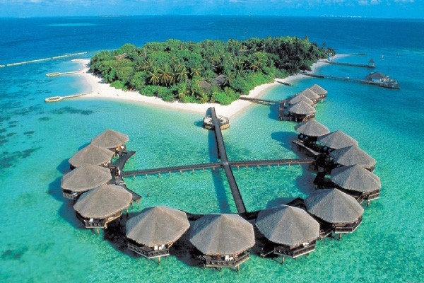
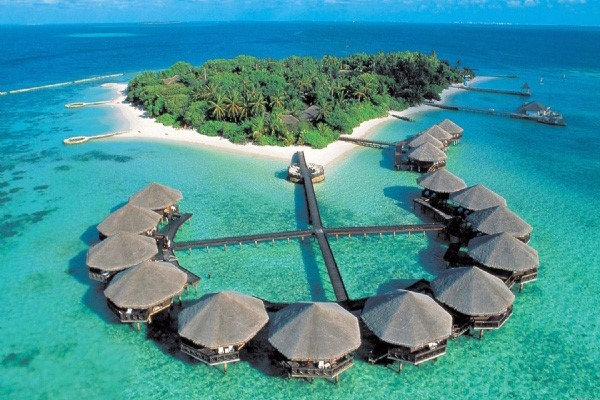

Bali
 

• Bali là hòn đảo du lịch nổi tiếng nhất Indonesia, được mệnh danh là “hòn đảo thiên đường” với những bãi biển đẹp như tranh vẽ, những ngôi đền cổ kính và nền văn hóa đặc sắc. Đến Bali, du khách không thể bỏ qua những bãi biển tuyệt đẹp như bãi biển Kuta, bãi biển Seminyak, bãi biển Nusa Dua,… Những bãi biển này có cát trắng mịn, nước biển trong xanh và sóng biển êm đềm, là nơi lý tưởng để tắm biển, lặn biển, lướt sóng,…
• Bên cạnh đó, Bali còn có nhiều đền chùa cổ kính mang đậm dấu ấn của nền văn hóa Hindu giáo. Một số ngôi đền nổi tiếng ở Bali như đền Tanah Lot, đền Besakih, đền Uluwatu,… Ngoài ra, Bali còn có nhiều hoạt động vui chơi giải trí hấp dẫn như lặn biển, chèo thuyền vượt thác, leo núi lửa,…
• Du khách cũng có thể tham quan khu rừng khỉ Monkey Forest, ruộng lúa bậc thang Tegallalang,… để khám phá những nét văn hóa đặc sắc của người dân bản địa. Bali là một điểm đến du lịch hấp dẫn, mang đến cho du khách những trải nghiệm khó quên.